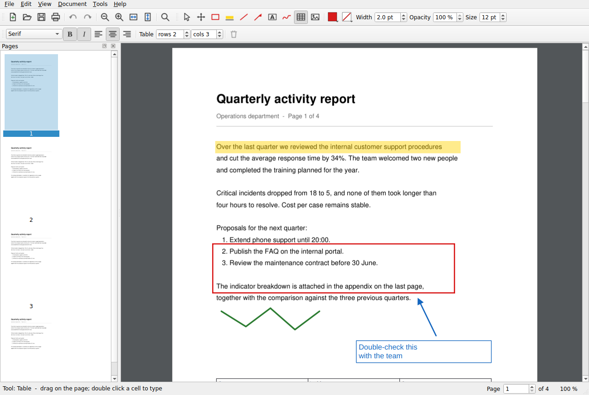

Write on top of your PDFs
Write on top of the document, highlight what matters, add tables, arrows and images, then save or print it. Like Adobe Reader, only much simpler.
- downloads- visits today

What you actually need
-
Comfortable readingFlip through pages, zoom in on small print and search any word in the document.
-
Write on topBox things out, highlight, add arrows, text notes or draw freehand.
-
Tables and imagesDrop in tables with typeable cells, plus photos, signatures or logos.
-
PrintingWith preview and page ranges. What you annotate is what comes out on paper.
-
Create documentsStart from a blank page, add as many pages as you need and save the PDF.
-
TemplatesSave your letterhead or table and reuse it in another document in one click.
Downloads
For Windows The usual choice. Installs like any other program. 42 MB Windows, no install Installs nothing. Runs from a USB stick. 60 MB For Linux Unpack and run. 64-bit. 62 MBThere is no Mac build yet. · If Windows warns about an unknown publisher, click More info then Run anyway: the app is not signed with a paid certificate.
Quick answers
Is it really free?
Yes. No paid version, no subscription, no document limit.
Do I need an account?
No. Open it and use it, no sign-up, no email.
Are there ads?
None. And it does not sneak in extra software either.
My antivirus deleted the file. Is it dangerous?
No. It is a false alarm that hits small programs built with Python and not signed with a paid certificate. You can restore the file from your antivirus quarantine, and check it arrived intact with the .sha256 file next to the download. The whole source code is public, so anyone can inspect it.
How do I get new versions?
The program checks on its own and tells you when there is one. From that notice you can download and install it without leaving the app. You can also turn the check off in the Help menu.
Does it work offline?
Yes. You only need a connection to download it once.
Are my documents uploaded anywhere?
No. Everything happens on your computer.
What if I do not like it?
Uninstall it like any other program, from Settings.